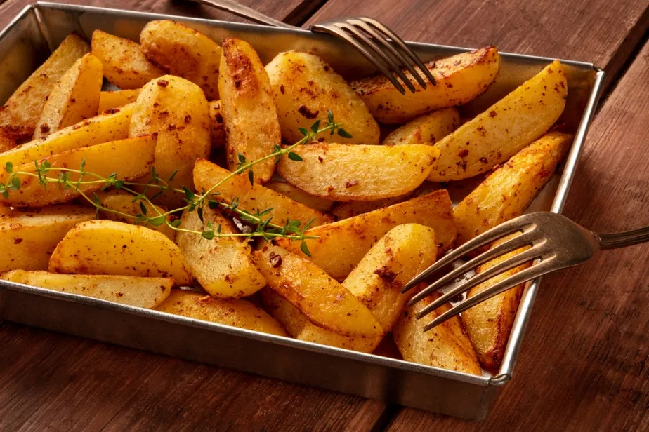

Batata Assada Rústica
Crocante por fora, macia por dentro e com um perfume de dar água na boca.A batata rústica é aquele acompanhamento que brilha tanto quanto o prato principal. Vamos fazer isso juntos no chef.io? 
Com poucos ingredientes e um bom forno, você pode preparar uma batata assada irresistível. Essa missão ensina os truques para temperar, cortar e assar sem erro.
Seja como petisco ou acompanhamento, a batata rústica vai conquistar sua cozinha.
Prepare as facas, pré-aqueça o forno e bora pra missão!
Batata Rústica
- PREPARO
10 mins - COZIMENTO
35 mins - DESCANSO
- TOTAL
45 mins
RENDIMENTO: 4 porções
NOTA: Pode usar outros temperos como alecrim, páprica ou curry.
Ingredientes
- 5 batatas médias com casca
- 3 colheres de sopa de azeite
- Sal e pimenta a gosto
- Alho amassado ou em pó (opcional)
- Ervas secas: orégano, alecrim, tomilho (opcional)
Modo de preparo
- Prepare as batatas:
Lave bem as batatas e corte em gomos grandes, no estilo rústico. Seque bem com um pano de prato. - Tempere com personalidade:
Misture as batatas com azeite, sal, pimenta e os temperos escolhidos. Mexa com as mãos para envolver bem. - Distribua na assadeira:
Espalhe os pedaços com a casca voltada para baixo, sem sobrepor. - Asse com paciência:
Forno preaquecido a 200°C por 30 a 40 minutos ou até dourar. Vire na metade do tempo para assar por igual. - Sirva com estilo:
Finalize com ervas frescas ou queijo ralado. Vai bem com qualquer prato — ou sozinho, como petisco campeão!
:max_bytes(150000):strip_icc():format(webp)/Simply-Recipes-Roasted-New-Potatoes-METHOD-1-97bbe28009a14909b356e278ec02d873.jpg)
:max_bytes(150000):strip_icc():format(webp)/Simply-Recipes-Roasted-New-Potatoes-METHOD-2.1-6cc6d511a2be49698047b97e45c39a6f.jpg)
:max_bytes(150000):strip_icc():format(webp)/Simply-Recipes-Roasted-New-Potatoes-LEAD-9-bc5f23b0bd814df1b2226e0e89492427.jpg)
Batata assada sem erro
Assar batatas pode parecer fácil, mas há ciência e mágica por trás da crocância perfeita. Vamos destrinchar os segredos da batata rústica dourada e suculenta.
Corte inteligente:
O corte em gomos garante o equilíbrio entre casquinha crocante e interior macio. Tente manter tamanhos parecidos para assar por igual.
Secar é essencial:
A umidade é inimiga da crocância. Após lavar, seque bem as batatas antes de temperar.
Ervas e temperos:
Alecrim, tomilho, páprica defumada, pimenta-do-reino. Teste combinações para criar sua assinatura de sabor.
Assadeira certa:
Evite sobreposição. Dê espaço entre as batatas para que todas fiquem douradinhas.
Calor do forno:
Forno bem quente (200–220°C) é crucial. Vire as batatas na metade do tempo para garantir uma crocância uniforme.
Informações Nutricionais (porção média)
Estimativas aproximadas com base em batata, azeite e sal. Ingredientes adicionais alteram os valores.
Você concluiu a receita!
Você dominou a arte de transformar batatas simples em uma explosão de sabor. Esse é o tipo de receita que todo cozinheiro precisa na manga.
Nessa lição você aprendeu:
- Como cortar e secar para alcançar crocância
- Quais temperos elevam a batata rústica
- Como assar por igual e com textura perfeita
- Dicas para servir com estilo
Parabéns por mais uma conquista! Continue praticando, testando e se divertindo na cozinha!
 Conquista desbloqueada:
Conquista desbloqueada: Domador de Forno!